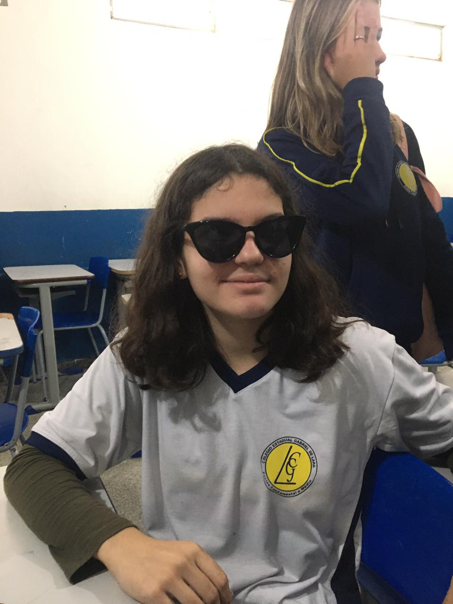

Aqui será apenas um lugar para regitro do intercâmbio da Anne Alves, uma fanática por cubos mágicos, xadrez, matemática e que rouba no ludo.
Anne Alves Meneghelli é uma garota que nasceu no dia 12/08/2008 em Londrina, atualmente mora no Litoral do Paraná, mais especificamente em Matinhos, está cursando o 1º ano do ensino médio no Colégio Estadual Gabriel de Lara, em 2023 passou em um processo seletivo para um intercâmbio, ela irá para a Austrália em 2024, estudará lá por 6 meses!
Ela tem como hobbies, montar cubos mágicos (seu recorde no 3x3 é de 26.54 🙀), jogar xadrez, ludo, etc. Ela é muito boa em matemática (muito mesmo), ganhou medalha na OBMEP. Anne é uma otima pessoa, um pouco chata as vezes, mas quem não é? Até mesmo quem diz não gostar muito da Meneghelli, vai sentir falta quando ela viajar